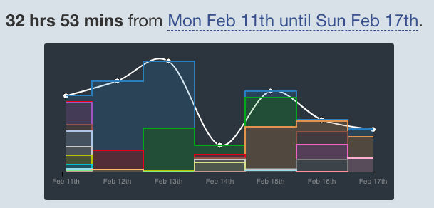
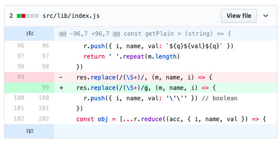
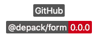
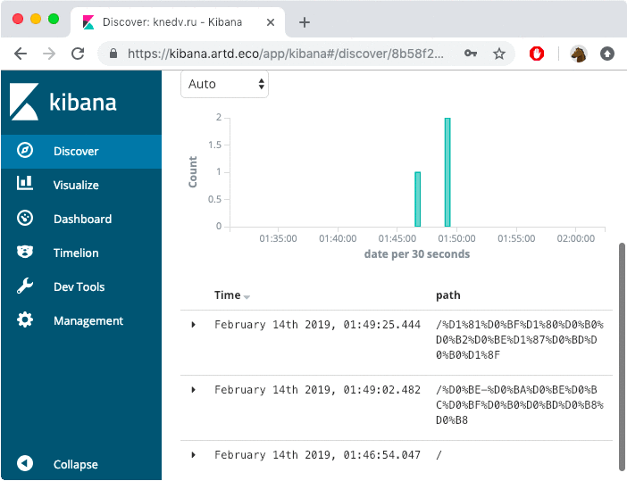
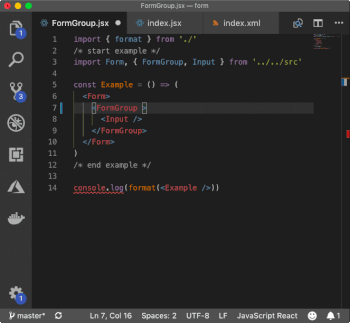
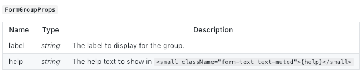

11-17 February
The job for this week is to finish work on Depack, document the frontend bundler part of it, and add the possibility to override Node.js builtin externs. The message about it can then be spread on the Google Closure Compiler group and Medium. After that, Zoroaster can be modified to have persistent contexts and test frontend Preact packages that I have and will make (router and form). On the 15th, the call for papers for JSCamp in Barcelona opens, so I will apply to that with the story about Depack and Frontend, which could hopefully be useful to others.Week Results
This week was slower than the previous one and more relaxed with more freestyle creative work rather than concrete focus.
The things accomplished were:
- Create the website for Depack/Form;
- Update Splendid to allow for mounted websites and switching to using JSX components;
- Documenting Depack/Form with pretty html;
- Finding the way to enable JSDoc properties autocompletion for Class components;
- Improving Zoroaster to pass mask properties to mask constructors;
- Releasing Logarithm1.0.0 built with Depack;
- Creating the Depack/Render and improving Preact's algorithm for pretty print;
- Fixing the bugs in ÀLa/JSX related to boolean attributes;
- Adding Depack/Context for mask-testing of front-end JSX components;
- Registering the @reducer NPM scope (with rdcr GitHub org) and creating the render-reducer package which in future will make sure that the element is always rendered whenever its parent is present.
17 Sunday
On Sunday, I wanted to document using Depack/Render on a server for server-side-rendering, like the original Preact documentation does for Express. I also added the doctype option that would automatically add <!doctype html> at the beginning of the rendered string, and fixed a JSDoc bug due to incorrect typedef name in the config, that prevented developers from seeing the correct property expansion on the Config property, which was at some point renamed to be RenderConfig. The types directory also had to be published because the types were to be used in another package called Depack/Context used for testing of front-end components.
Depack/Context's job is to take the JSX source code from the mask, transform it into HTML and compare the expected output of the mask. The two packages used for that are ÀLa/JSX to compile the source into h pragma invocations by Preact, and Depack/Render to render the invocations into actual HTML. The Depack/Render is also tested with the JSX context, but using the source render function rather the one provided by the context. The context and render packages had to be linked because they depend on each other, however after Depack/Render is released and used in Depack/Context, it does not need releasing even after the context version is increased since it's only a dev dependency, otherwise there would be an infinite race to increase versions of these two packages. Finally, I also tested the Depack/Form component with the context, which will now be the standard way to mask test components. The context is similar to the snapshot testing, however with the advantage of not having to write a test logic for each input.
// returns the correct output
<Form></Form>
/* expected */
<form></form>
/**/
// creates FormGroup
<FormGroup label="test" help="ok">
<Input placeholder="test"/>
</FormGroup>
/* expected */
<div class="form-group">
<label htmlFor="i70984">test</label>
<input placeholder="test"
class="form-control" type="text"
aria-describedby="hi70984" id="i70984" />
<small id="hi70984"
class="form-text text-muted">ok
</small>
</div>
/**/import Form, { FormGroup, Input } from '../../src'
// during the `test-build`: '../../build'
export default makeTestSuite('test/result/index.jsx', {
/**
* @param {string} input
* @param {JSXContext} context
*/
getResults(input, { getVNode, render }) {
const vnode = getVNode(input, {
Form, FormGroup, Input, // PASS THE SOURCE COMPONENTS
})
const res = render(vnode, {
pretty: true,
})
return res
},
}
16 Saturday
Saturday involved finishing off updating the ContextTesting/Fork logic to perform the mask testing where mask's properties would be passed to the fork config generator functions such as getArgs and getOptions. In addition, I added the appropriate documentation to the fork package with the example of how to use it. I then published it, integrated into Zoroaster so that the tests I wrote the previous day started to pass and used the newer version to test ÀLaMode which confirmed the fork context logic to work correctly.
15 Friday
Friday was documenting Depack/Render to give examples of both standard and pretty rendering. The default line length was also reduced from 80 to 40 and documented easily with Documentary by updating the types/index.xml file. There was also the task of updating the docs for Depack/Form, but because ÀLaMode1.8.1 was not updated to include bugfixes in À-La/JSX I had to release the new version that would render the boolean attributes used in forms correctly (e.g., <option selected> instead of <option selected="true">). However instead of just upping the versions of node_modules , I wanted to contribute to the Quality Assurance of the package and implemented a test for the require hook that transpiles JSX. Previously, there were no tests for such functionality and it was a slight challenge to understand how to test it. The method chosen to do that is via forks to make sure that the require function is "fresh" for every test — otherwise it's a function with side-effects such as caching, so there's a possibility that tests would produce an incorrect result. To mask test require via a fork, the input from the mask is taken and put in a temp JSX file using TempContext, which is then required by the tests. The input then also prints the function which is contained in it and which will be transpiled by the hook if everything goes right.// The mask test setup.
export const jsx = makeTestSuite('test/result/jsx.js', {
fork: {
module: 'test/fixture/require',
/**
* @param {TempContext} t
*/
async getOptions({ write }) {
const p = await write('temp.jsx', this.input)
return {
env: {
MODULE_PATH: resolve(p),
},
}
},
},
context: TempContext,
jsonProps: ['expected'],
})// The mask result: transpiles jsx with the require hood
function App() {
return (
<div className="test">
Hello World
</div>
)
}
export { App }
console.log(App.toString())
/* stdout */
function App() {
return (
h('div',{className:"test"},
`Hello World`
)
)
}
/**/ToDo
14 Thursday
First thing on Thursday was refactoring some components in Splendid into being JSX components, including the <SectionBreak/>, <File/> and <PageTitle/>. The new architecture to use JSX is better than simple regular expressions, because it's more idiosyncratic and could eventually help to write components for dynamic front-end as well, such as embedding them with Preact. It's also easier to maintain and document, however there is still an issue that the autosuggestions for component properties do not appear in the pages source code, however this could only be overcome by making all pages JSX components which is opposite to the goal of Splendid that allows to write simple HTML and markdown but embed components. Nonetheless, the new components looks much better, compare:// The old way
import rexml from 'rexml'
const breaksRule = {
re: /( *)(<SectionBreak.*?\/>)/gm,
replacement(m, ws, SectionBreak) {
const [{
props: { width, id: i = this.breaksCount, alt = 'Back To Top', href = '#top' }
}] = rexml('SectionBreak', SectionBreak)
const id = parseInt(i || '0')
const w = width ? ` width="${width}"` : ''
const res = `<p class="SectionBreak">
<a href="${href}" title="${alt}">
<img src="splendid://section-breaks/${id}.svg" alt="${alt}"${w}>
</a>
</p>`
this.breaksCount = id + 1
return res.replace(/^/gm, ws)
},
}
export default breaksRule// The new way
export default async function SectionBreak({
width, alt = 'Back To Top', href = '#top',
splendid, id: i = splendid.breaksCount,
}) {
const id = parseInt(i || '0')
splendid.breaksCount = id + 1
return (<p className="SectionBreak">
<a href={href} title={alt}>
<img src={`splendid://section-breaks/${id}.svg`}
alt={alt} width={width} />
</a>
</p>)
}JSX Components are also nicer to test and will help me to derive the infrastructure for testing frontend software. I choose the testing strategy that would involve rendering the components using preact-render-to-string as the initial unit tests. However, I was not happy with the fact that this package is dependent on the pretty-format package which belongs to Facebook and also pulls the strip-ansi package downloads counter of which I don't want to increase (I don't like popular packages). Therefore, I forked it and made a new package for rendering server-side HTML called Depack/Render. The main advantage of doing that is that I understood more how server-side rendering is done in Preact, and made some modifications myself. In particular, I improved the pretty printing functionality which in original Preact/Render would put each new attribute on the new line which is not feasible for documentation. Earlier this week, I wrote a simple script to format HTML, however it was error-prone and approached the problem from outside of the black "rendering" box, whereas modifying the actual rendering logic is getting inside of that box and having more control of what's happening. This made the previous script for formatting HTML redundant, however I was then able to compile Depack/Form documentation with Depack/Render and it was nicely presented like I wanted it to.
There were some bugs I found out about in the À-La/JSX1.4.0 such as that boolean attributes were assigned the value of 1 rather than an empty value, which Preact rendering was expecting, e.g., the <input required> would be incorrectly rendered as <input required="1">. And exactly because I forked Preact/Render and studied the source code while modifying it for my Depack/Render fork I was able to identify this problem. The second bug was discovered when writing unit-tests and involved JSX package only processing a single boolean attribute where there could be any number of them. The problem was solved with a single g modifier to the RegExp.
ToDo
13 Wednesday
On Wednesday, I started by adding two badges to the website, the NPMBadge and GitHub badge, which were implemented as components. There was also a SelfBadge which would read information from the package.json of the package for which the website is made with Splendid and display the correct information there. The components are also made to be async now so that they can execute some asynchronous operation before their rendering. This type of JSX components is only made for Splendid and cannot be used in other JSX components.
I then worked more on Splendid to enable correct AJAX behaviour when a page is mounted not on the root of the domain, e.g., https://dpck.github.io/form/. It required an update the the frontend ajax-loader.js script, which would receive the root property from the Splendid config, and load the page from there. Otherwise, webpages were attempted to always load from the root which GitHub pages does not allow. An update to the Splendid core was also required to tell the development server to serve files from the specified mount point. Another learning outcome is to compile AJAX library as the IIFE in isolation mode to prevent the overriding of scoped functions by other scripts. For example, the compiled AJAX code has the function named x, and the demo source code had the same function since they're both compiled with Google Closure Compiler, but because the latter was added at a later point, it would override the original x function and prevent AJAX navigation from working.
Finally, I've finished documenting the logarithm software and published it on the NPM. The middleware allows to log each request's information into ElasticSearch. It was also compiled with Depack to ensure to install only dependencies for the API version of the package. I then enabled Logarithm on the knedv.ru website, and I could see the visitors to the developments server (i.e., me) in the Kibana dashboard.

Logarithm Middleware sends data about requests to the ElasticSearch. The portal is implemented as patched OSS Kibana with authentication.
ToDo
12 Tuesday
Today I worked on documentation of the Depack/Form package, and improved the formatting of HTML. The examples now also use the seeded random number generator that prevented updating of id values each time the documentation generator is run. I finished documenting every component and described writing custom components.
At night, during working on the website to close #1, I encountered the problem with the website generation where the demo would not re-render after AJAX navigation, because scripts dynamically added to the page via setting innerHTML on the container component do not execute. I went on to research the possible solutions and found the thread on StackOverflow describing how to solve the problem, by extracting the scripts using the regular expressions. The change had to be made to Splendid so that received scripts are executed. The adaptation to the original script was made to enable executing scripts with module type. The source maps for the AJAX library was also added to enable debugging, as well as source maps for the bundle Depack/Form compiled with Depack.
function stripAndExecuteScript(text) {
var scripts = ''
var modules = []
var cleaned = text.replace(/<script([^>]*)>([\s\S]*?)<\/script>/gi, function(m, tags, script){
if (/type="module"/.test(tags)) {
modules.push(script)
return
}
scripts += script + '\n'
return ''
})
modules.forEach(function(mod) {
makeScript(mod, true)
})
makeScript(scripts)
}On the about page, the Depack/Form demo is loaded from the compiled bundle made with Depack, whereas The Modules Demo page on the website loads the source code via modules. It was made to show the possibility of executing the javascript source code via the native browser functionality in modern browsers. It helped to discover a use case of when one would need to collect all dependencies' source files into a single directory which can be served by a CDN for example.
ToDo
11 Monday
On Monday, I worked on filling in the static-analysis package with the code from Depack, so that when I took it out of Depack, the latter looked much neater because it focused on packing the code together rather than performing the static analysis tasks. I also documented the new package so that I can visually see what it generates by automatically embedding examples. This new package was also needed for the bundle part of Depack to discover dependencies in node_modules . The task was complete successfully and I was able to integrate @depack/bundle into Depack and compile the knedv.ru Preact website. Additionally, I released the change to ÀLaMode that was required to build JSX modules to prepare them for Depack bundling, since it was decided that external modules would have to provide already compiled JSX code to simplify the process.
I then worked more on documentation of the Form package for Depack and included the types notations as well as examples. I found the way to provide JSDoc IntelliSense suggestions for the VSCode for components written as classes, which I struggled with before. It's a workaround that requires an extra meaningless line to the code, but it is worth the result that it produces. For example, to document the FormGroup component, I would have to add the this.props = this.props assignment annotated with the type:
/**
* The div with `form-group` class to hold the label, input, help and validation message.
*/
export class FormGroup extends Component {
constructor() {
super()
this.id = `i${Math.floor(Math.random() * 100000)}`
this.hid = `h${this.id}`
/**
* @type {FormGroupProps}
*/
this.props = this.props
}
/* ... methods */
}
The props can then also be used in the documentation by simply calling %TYPEDEF types/index.xml FormGroupProps% which Documentary understands. This help to discover the bug which I then fixed in Documentary when types tables referenced by name after the first one were not inserted.

View Form documentation at https://github.com/dpck/form
Towards the end of the day, I spent some time on writing an HTML formatter, because after I removed passing new lines as strings to the JSX pragma (see previous week), the preact-render-to-string package started to render the code without indentations which was hard to read and not suitable for the documentation. Therefore, I made a simple at-first function that split tags at >< point and inserted new lines between them. It was then modified to account for opening and closing tags, as well as if the tag is a textarea element which means there cannot be any new lines. I then had a neat function which also indented attributes after the line width became too large, and presented all example HTML output of the Form component in a nice way:
<form>
<div class="form-group">
<label htmlFor="i90435">
Input
</label>
<input name="input" class="form-control" value="hello-world" type="text"
aria-describedby="hi90435" id="i90435" />
<small id="hi90435" class="form-text text-muted">
Type in something...
</small>
</div>
<div class="form-group">
<label htmlFor="i12194">
Select
</label>
<select name="select" value="2" class="custom-select" id="i12194"
aria-describedby="hi12194">
<option>
</option>
<option value="1">
Free will
</option>
<option value="2" selected="true">
Unfree will
</option>
</select>
<small id="hi12194" class="form-text text-muted">
Please select...
</small>
</div>
<div class="form-group">
<label htmlFor="i51376">
TextArea
</label>
<textarea name="textarea" aria-describedby="hi51376" class="form-control" id="i51376" rows="3">One must still have chaos in oneself to be able to give birth to a dancing star.</textarea>
<small id="hi51376" class="form-text text-muted">
Multiple row input...
</small>
</div>
</form>TODO
- Make the html formatter a separate package.
- Unit test rendering of components with preact-render-to-string first before writing acceptance tests for the browser. rexml package can be used here, however it would not be able to extract multiple elements of the same kind in a parent.
- Add an article on Medium about how to add JSDoc for Preact class components without using TypeScript.